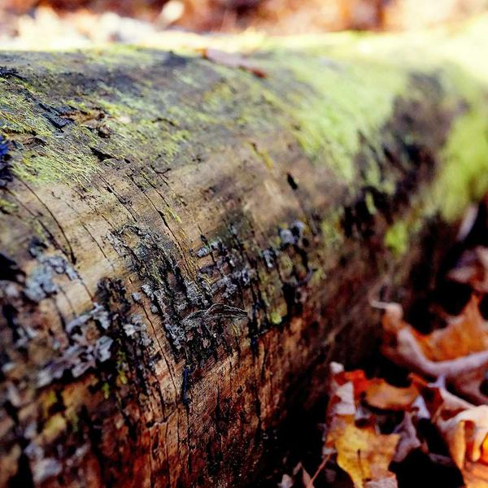
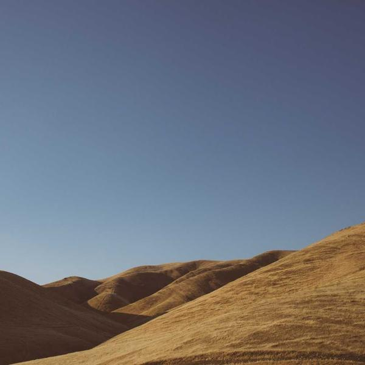
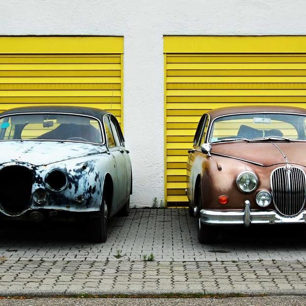

Your Library
18 saved · sorted by recently added
-
 Late Night Drive
Late Night DrivePlaylist · Vela Moreno
62 songs
-
 Slow Tide
Slow TideAlbum · Vela Moreno
11 tracks
-
 Vela Moreno
Vela Moreno1.28M monthly listeners
24 tracks
-
Field Notes
Northern Ridge Radio
128 eps
-

Discover WeeklyPlaylist · Made for you
30 songs
-
 Blue Hour
Blue HourAlbum · Hana Sō
10 tracks
-
 Nils Aker
Nils Aker842k monthly listeners
18 tracks
-
 Deep Focus
Deep FocusPlaylist · Made for you
128 songs
-
The Long Way Round
Wanderline
44 eps
-
Cold Storage
Album · Nils Aker
8 tracks
-
 Coastal Divide
Coastal Divide403k monthly listeners
23 tracks
-
 Sunday Morning Coffee
Sunday Morning CoffeePlaylist · Made for you
45 songs
-
 Halcyon Street
Halcyon StreetAlbum · The Rookery
10 tracks
-
Rooftop Sessions
Halcyon Audio
62 eps
-
 Terminal
TerminalAlbum · The Rookery
9 tracks
-

Release RadarPlaylist · Made for you
30 songs
-
 Marta Ísleif
Marta Ísleif318k monthly listeners
19 tracks
-

Two Cars, One RoadGrease & Chrome Media
209 eps
Nothing saved here yet
Anything you save from Home, Search or a podcast will land in this filter.